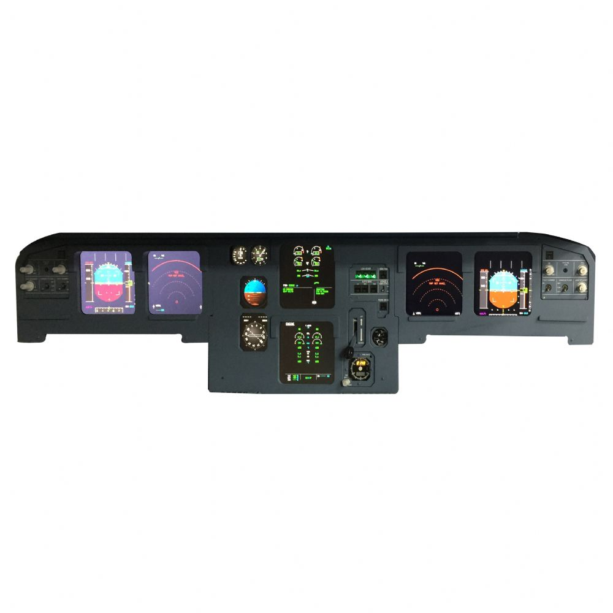
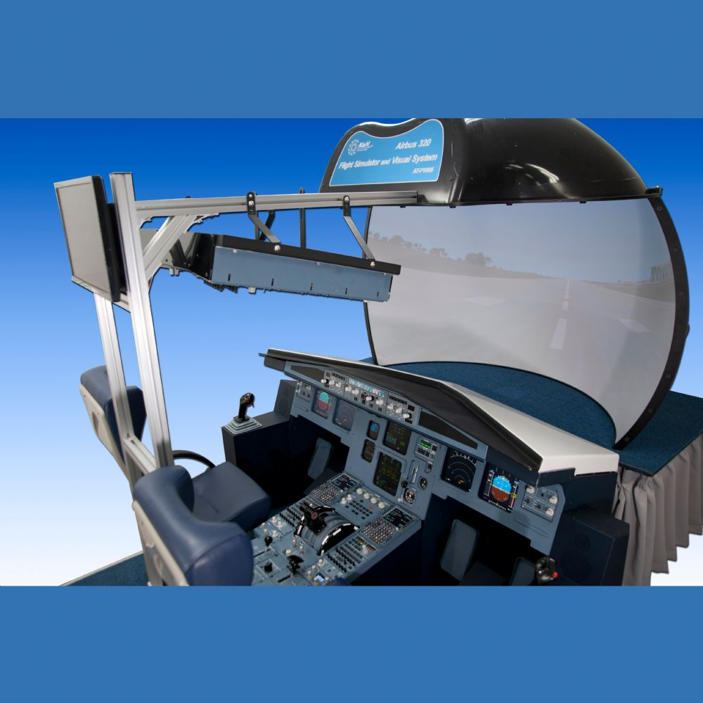
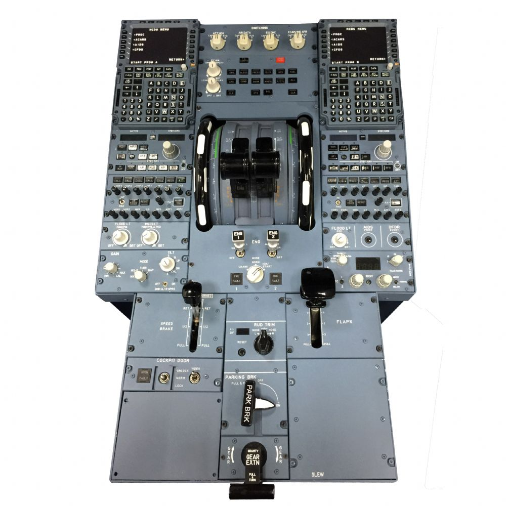

Main Features
SkySim Pro offers a comprehensive suite of features designed for professional flight training:
- Advanced Flight Dynamics Engine with realistic aircraft behavior
- High-fidelity cockpit with authentic controls and instrumentation
- Multiple aircraft types and configurations
- Real-time weather simulation and dynamic conditions
- Global terrain database with detailed airports and navigation aids
- Multi-monitor support for enhanced visual experience

Applications
SkySim Pro is designed for various professional applications:
- Flight schools and pilot training centers
- Military flight training programs
- Airline pilot training and certification
- Private pilot training and currency maintenance
- Research and development in aviation
- Emergency procedure training

Advantages
Why choose SkySim Pro for your flight training needs:
- Cost-effective training solution compared to actual flight hours
- Safe environment for practicing emergency procedures
- Customizable training scenarios and missions
- Detailed performance tracking and debriefing tools
- Regular software updates and new aircraft additions
- 24/7 technical support and training assistance
